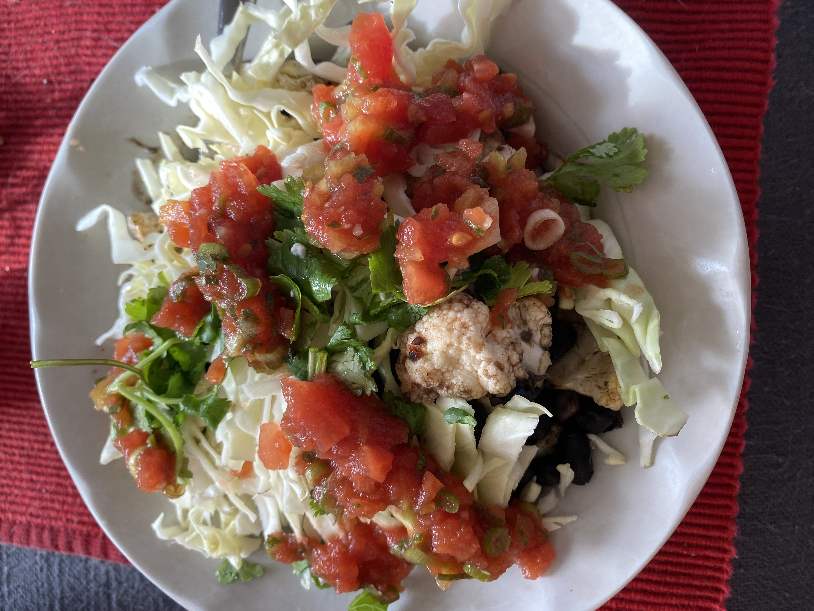

Spicy Black Beans

Ingredients
- Dry black beans, soaked (at least a few hours, preferably overnight)
- Garlic
- Yellow onion
- Spices: dry or fresh peppers, red pepper flakes, smoked paprika, salt, cumin
- Toppings: chopped cabbage, roasted cauliflower, cilantro, salsa, hot sauce, pickled red onion
Steps
- Add rinsed beans, water to cover, chopped onion, whole garlic cloves and desired spices to pot.
- Bring to a boil, then turn down to low-medium heat, cover and cook til beans are tender
- Once beans are tender, cook uncovered to reduce liquid if necessary.
- Use fork to lightly mash beans, garlic cloves, and peppers.
- Assemble into bowls, burritos, or tacos with desired toppings.